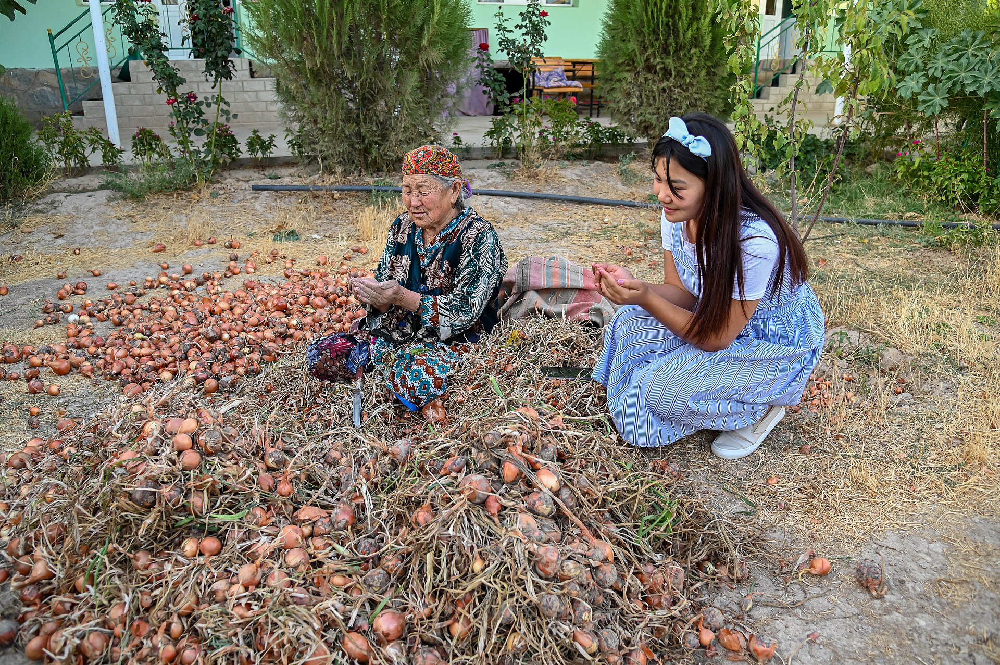

O‘zbekiston Jahon banki va YUNISEF bilan “moslashuvchan ijtimoiy himoya” strategiyasini ishlab chiqmoqda
4-sentabr kuni bo‘lib o‘tgan muhokamada iqlim, tabiiy va iqtisodiy zarbalarga uchragan oilalarni tez qo‘llab-quvvatlash mexanizmlari ko‘rib chiqildi.

2026-yil 4-sentabr kuni O‘zbekiston Iqtisodiyot vazirligi, Jahon banki va YUNISEF vakillari “moslashuvchan ijtimoiy himoya” (adaptive social protection) strategiyasini ishlab chiqish bo‘yicha muhokama o‘tkazdi. Muzokaralarda Iqtisodiyot vaziri o‘rinbosari Otabek Fazilkarimov, Ijtimoiy himoya milliy agentligi vakillari va xalqaro maslahatchilar qatnashdi.
Konsepsiyaning mohiyati
Moslashuvchan ijtimoiy himoya — ijtimoiy yordam tizimini oldindan aniqlangan doimiy ro‘yxat asosida emas, balki yuzaga kelgan zarbaga qarab tezkor kengaytirish imkonini beruvchi yondashuv. Uning asosiy g‘oyasi shundan iboratki, tabiiy ofat, qurg‘oqchilik yoki iqtisodiy inqiroz yuz berganda yordam tizimi yangi ma’lumotlar bazasini noldan yig‘ish o‘rniga mavjud infratuzilma orqali darhol ishga tushadi.
Muhokamada uy xo‘jaliklarining turli zarbalarga bardoshliligini kuchaytirish, ijtimoiy yordamni tezkor yetkazish mexanizmlarini yaxshilash va davlat organlari o‘rtasidagi muvofiqlashtirishni kuchaytirish choralari ko‘rib chiqildi.
Keyingi bosqichlar
- Manfaatdor tomonlar bilan maslahatlashuvlar o‘tkazish
- Xalqaro amaliyotni o‘rganish
- O‘zbekiston uchun ustuvor xavf sohalarini aniqlash
- Iqlim va favqulodda vaziyatlar bilan bog‘liq risklarni baholash
Nega aynan iqlim risklari
O‘zbekistonda 2026-yil yozi kuzatuvlar tarixidagi ikkinchi eng issiq yoz bo‘lib qayd etildi. Mintaqa miqyosida esa suv taqchilligi tizimli muammoga aylanmoqda: xalqaro hisobotlarda Markaziy Osiyodagi muzliklar hajmi o‘tgan asrga nisbatan taxminan 30 foizga kamaygani keltiriladi.
BMTning global qurg‘oqchilik bo‘yicha hisobotida Markaziy Osiyo eng zaif mintaqalardan biri sifatida ko‘rsatilgan. Ilgari o‘n yilda bir marta takrorlangan kuchli qurg‘oqchiliklar 2000-yillardan beri ancha tez-tez kuzatilmoqda.
Prognozlarga ko‘ra, 2050-yilga borib qurg‘oqchilik bilan bog‘liq yo‘qotishlar mintaqa yalpi ichki mahsulotining yiliga 1,3 foiziga yetishi mumkin.
Ijtimoiy himoya tizimi fon
O‘zbekiston so‘nggi yillarda ijtimoiy himoya sohasini qayta tashkil etdi: alohida Ijtimoiy himoya milliy agentligi tashkil etildi, yagona reyestr (“Ijtimoiy himoya yagona reyestri”) yo‘lga qo‘yildi va nafaqa turlari birlashtirildi.
Xalqaro mehnat tashkiloti, YUNISEF va Jahon banki bu islohotlarni qo‘llab-quvvatlagan va tizimni baholash bo‘yicha qo‘shma hisobotlar tayyorlagan edi.
Migratsiya bilan bog‘liqlik
Ijtimoiy himoya masalasi mehnat migratsiyasi bilan chambarchas bog‘liq. Rossiyada migratsiya qoidalarining qattiqlashuvi fonida 2026-yil 25-avgust — 5-sentabr oralig‘ida 96 415 o‘zbekistonlik vatanga qaytdi; mehnat migratsiyasi bir yil oldingiga nisbatan 13,2 foizga kamaydi.
Qaytgan fuqarolarning mehnat bozoriga qayta integratsiyasi va ularning oilalarini qo‘llab-quvvatlash ijtimoiy himoya tizimiga qo‘shimcha yuk tug‘diradi.
Hujjatning holati
Ijtimoiy himoya tizimi tuzilmasi
O‘zbekistonda ijtimoiy himoya tizimi so‘nggi yillarda qayta tashkil etildi. Alohida Ijtimoiy himoya milliy agentligi tashkil etilib, unga ilgari turli vazirliklarga taqsimlangan vakolatlar birlashtirildi.
Tizimning asosiy vositasi — “Ijtimoiy himoya yagona reyestri”. U yordam oluvchilar haqidagi ma’lumotlarni bitta bazada saqlaydi va turli nafaqa turlarini bog‘laydi.
Nafaqa turlari orasida kam ta’minlangan oilalar uchun moddiy yordam, bolalar nafaqasi va nogironligi bo‘lgan shaxslar uchun to‘lovlar bor.
Moslashuvchan tizim qanday ishlaydi
Moslashuvchan ijtimoiy himoya uch elementni birlashtiradi: dastlabki ma’lumotlar bazasi, oldindan belgilangan ishga tushirish mezonlari va tayyor moliyalashtirish manbai.
Zarba yuz berganda tizim yangi ro‘yxat tuzishga vaqt sarflamaydi: u mavjud bazadan foydalanib, yordamni vaqtincha kengaytiradi. Bu yondashuv xalqaro amaliyotda tabiiy ofatlar va iqtisodiy inqirozlar sharoitida sinovdan o‘tgan.
Ishga tushirish mezonlari odatda o‘lchanadigan ko‘rsatkichlarga bog‘lanadi — masalan, yog‘in miqdori, harorat ko‘rsatkichi yoki narx indeksi.
Iqlim risklari
O‘zbekistonda 2026-yil yozi kuzatuvlar tarixidagi ikkinchi eng issiq yoz bo‘lib qayd etildi. Yuqori harorat qishloq xo‘jaligi hosildorligiga va suv iste’moliga bevosita ta’sir ko‘rsatadi.
BMTning global qurg‘oqchilik bo‘yicha hisobotida Markaziy Osiyo eng zaif mintaqalardan biri sifatida ko‘rsatilgan. Ilgari o‘n yilda bir marta takrorlangan kuchli qurg‘oqchiliklar 2000-yillardan beri ancha tez-tez kuzatilmoqda.
Xalqaro hisobotlarda mintaqadagi muzliklar hajmi o‘tgan asrga nisbatan taxminan 30 foizga kamaygani keltiriladi. Prognozlarga ko‘ra, 2050-yilga borib qurg‘oqchilik bilan bog‘liq yo‘qotishlar mintaqa yalpi ichki mahsulotining yiliga 1,3 foiziga yetishi mumkin.
Migratsiya omili
Ijtimoiy himoya masalasi mehnat migratsiyasi bilan chambarchas bog‘liq. Rossiyada migratsiya qoidalarining qattiqlashuvi fonida 2026-yil 25-avgust va 5-sentabr oralig‘ida 96 415 o‘zbekistonlik vatanga qaytdi.
Migratsiya agentligi ma’lumotiga ko‘ra, o‘sha o‘n kun ichida 6 413 murojaat qabul qilingan va 5 467 fuqaroga amaliy yordam ko‘rsatilgan.
Qaytgan fuqarolarning mehnat bozoriga qayta integratsiyasi ijtimoiy himoya tizimiga qo‘shimcha yuk tug‘diradi: bu faqat nafaqa emas, balki qayta tayyorlash va ish bilan ta’minlash dasturlarini talab qiladi.
Xalqaro sheriklar
Strategiyani ishlab chiqishda Jahon banki va YUNISEF ishtirok etmoqda. Bu tashkilotlar ilgari Xalqaro mehnat tashkiloti bilan birgalikda O‘zbekiston ijtimoiy himoya tizimini baholash bo‘yicha qo‘shma hisobot tayyorlagan edi.
Xalqaro institutlarning ishtiroki odatda ikki jihatni beradi: boshqa davlatlar tajribasi va texnik ekspertiza. Bir vaqtning o‘zida milliy muassasalar bilan maslahatlashuvlar hujjatni ichki ustuvorliklarga moslashtirishga xizmat qiladi.
Byudjet jihati
Moslashuvchan tizimning asosiy sharti — oldindan ajratilgan zaxira mablag‘ yoki tezkor moliyalashtirish mexanizmi. Aks holda ma’lumot bazasi tayyor bo‘lsa ham, yordam kechikadi.
Strategiyaning yakuniy matni, moliyalashtirish manbalari va joriy etish muddatlari hozircha e’lon qilinmagan.
Kambag‘allikni qisqartirish dasturi
O‘zbekiston so‘nggi yillarda kambag‘allikni qisqartirish bo‘yicha alohida dasturni amalga oshirmoqda. Uning tarkibida “temir daftar” va shunga o‘xshash ro‘yxatlar orqali ehtiyojmand oilalarni aniqlash mexanizmi bor.
Dastur doirasida moddiy yordamdan tashqari kasb o‘rgatish, mikrokreditlar va tomorqa xo‘jaliklarini qo‘llab-quvvatlash choralari qo‘llanadi.
Moslashuvchan tizim bu infratuzilmaga qo‘shimcha qatlam sifatida qaralmoqda: mavjud ro‘yxatlar zarba yuz berganda tezkor kengaytirish uchun asos bo‘lib xizmat qilishi mumkin.
Iqtisodiy fon
2026-yilning birinchi yetti oyida O‘zbekistonda chakana savdo 20,2 foizga, bozor xizmatlari esa 16,7 foizga o‘sdi. Iste’mol narxlari indeksi 2025-yil dekabriga nisbatan 103,2 foizni tashkil etdi.
Iqtisodiyot vazirligi yil yakunida o‘rtacha inflatsiyani 6,5 foiz, ishsizlikni esa 4,5 foiz darajasida bashorat qilmoqda.
Nisbatan past inflatsiya va yuqori o‘sish sharoitida ijtimoiy himoya tizimiga bosim kamroq bo‘ladi; ammo iqlim va tashqi zarbalar bu manzarani tez o‘zgartirishi mumkin.
Mintaqadagi boshqa tajribalar
Qirg‘iziston 2026-yil sentabrida 850 million dollarlik iqlimga moslashish rejasini e’lon qilgan edi; unda suv infratuzilmasi va qishloq xo‘jaligini moslashtirish choralari ko‘rsatilgan.
Qozog‘istonda esa ijtimoiy to‘lovlar tizimi raqamli platformalar orqali boshqariladi va ma’lumotlar bazalari soliq hamda bandlik xizmatlari bilan bog‘langan.
Strategiya hozircha ishlab chiqish bosqichida. Uning yakuniy matni, moliyalashtirish manbalari va joriy etish muddatlari e’lon qilinmagan.